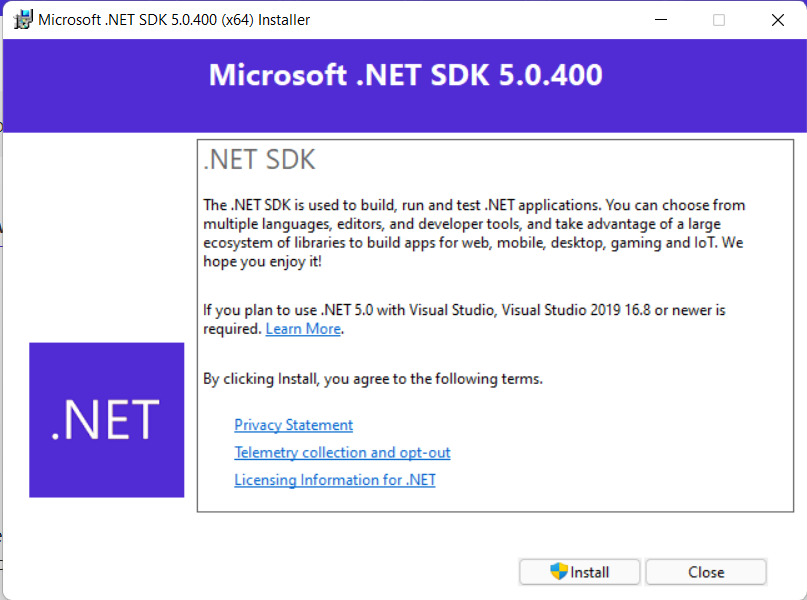

Instalasi
Instalasi .NET Core SDK
- Buka halaman unduh dotnet SDK di sini
- Setelah muncul tampilan seperti berikut, scroll ke bawah

- Pada bagian '.NET 5.0' (versi saat dokumen ini dibuat, jika ada versi terbaru silakan pilih versi tersebut) tekan tombol 'Download .NET SDK x64'
- Saat muncul tampilan seperti berikut, tekan 'Install'

- Setelah proses instalasi selesai, akan keluar tampilan berikut, tekan close

Memastikan .NET Core SDK Telah Terinstall
Cek PATH
- Tekan pada keybord, tombol Windows+R (tombol windows adalah tombol yang mempunyai logo 'jendela', biasanya disamping tombol alt, tekan tombol windows, lalu sambil menekannya, tekan tombol R)
- Akan muncul tampilan seperti ini:

- Ketikkan 'SystemPropertiesAdvanced' lalu tekan Enter
- Saat muncul tampilan berikut, tekan tombol 'Environment Variables'

- Pada tampilan berikutnya, cari 'Path' di bagian 'System Variables' lalu tekan tombol edit

- Setelah itu cari lagi nilai
C:\Program Files\dotnet

- Jika tidak ada, buat nilai baru dan masukkan
C:\Program Files\dotnet
- Lalu tekan OK → OK → OK
Menjalankan Dotnet CLI
- Buka 'Run' dengan menekan tombol Windows+R di keyboard
- Ketikkan
powershelllalu tekan Enter - Pada jendela powershell, ketikkan
dotnet --infolalu Enter lagi, setelah itu cari pada bagian '.NET SDK Installed', jika sudah ada maka maka instalasi berhasil
Membuat Proyek Menggunakan Dotnet CLI
- Buat folder yang digunakan untuk menyimpan proyek, misal
D:\projects - Buka powershell, seperti sebelumnya
- Masuk ke folder proyek menggunakan perintah
cd, misalcd D:\Projectslalu tekan Enter - Buat folder dengan nama proyek menggunakan perintah
mkdir, misal jika ingin membuat folder bernamaProyekBaruberarti perintahnya:mkdir ProyekBaru, lalu tekan enter - Masuk ke folder yang baru saja dibuat menggunakan
cdlagi. Jika nama foldernya adalahProyekBaruberarti perintahnya adalahcd ProyekBaru - Setelah berada pada folder tujuan, ketikkan
dotnet new console - Setelah perintah selesai dijalankan, ketikkan
code .di powershell lalu Enter
Menginstall Ekstensi C# pada VS Code
- Buka menu ekstensi, search 'C#' lalu install ekstensinya, seperti dibawah ini

- Tunggu sampai proses instalasi selesai dan restart VS Code jika diminta
Membuka File Program.cs
- Buka menu 'explorer' di bagian kiri, lalu klik dua kali file 'Program.cs'
- File akan ditampilkan dan kalian bisa mengeditnya
Menjalankan Program dengan Dotnet CLI
- Buka powershell baru, atau gunakan yang sebelumnya
- Masuk ke folder proyek, jika sama seperti saya tadi berarti
D:\projects\ProyekBaru, maka perintahnya adalahcd D:\projects\ProyekBaru - Setelah sudah berada dalam folder, ketikkan perintah
dotnet rununtuk menjalankan program kita
Menggunakan Terminal Dalam VS Code
- Tekan tombol Ctrl+` pada keyboard (symbol ` (backtick) biasanya ada di atas tombol 'Tab')
- Jika berhasil maka akan muncul tampilan dibawah tampilan kode, seperti ini:

- Dalam terminal tersebut kalian sudah berada pada folder proyek, jadi jika kalian jalankan perintah
dotnet runmaka program akan dijalankan - Cobalah sendiri, ketikkan
dotnet rundalam terminal tersebut lalu tekan Enter